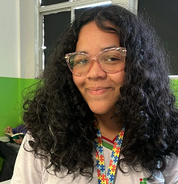

Somos estudantes do IFAL - Campus Maceió, cursando técnico em Desenvolvimento de Sistemas. Ana Gabriely, jovem que escreve textos fictícios e cria poemas. Pedro Cleyvid, amante de fotografia. Juntos buscamos construir um site que facilite a produção de fotografias com aparelho celular, apresentando, por exemplo, dicas para obtenção de boas imagens em ambiente noturno. Esperamos que gostem do projeto e que esse seja útil à comunidade.
@pedrocleyvid
@mawabii.tea